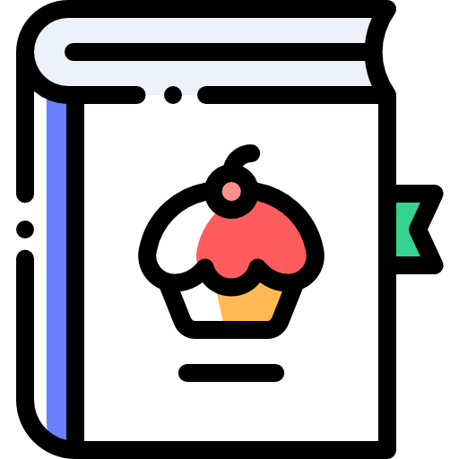

<mat-toolbar color="primary" class="header">
  <a routerLink="/recipes" class="logo">
    
  </a>
  <a routerLink="/recipes" class="link">Recipes</a>
  <a routerLink="/shopping-list" class="link">Shopping list</a>
</mat-toolbar>

<!-- <a href="https://www.flaticon.com/free-icons/recipe" title="recipe icons">Recipe icons created by Freepik - Flaticon</a> -->

<!-- <nav class="navbar navbar-default">
  <div class="container-fluid">
    <div class="navbar-header">
      <a routerLink="/recipes" class="navbar-brand">Recipe Book</a>
    </div>
    <div class="navbar-default">
      <ul class="nav navbar-nav">
        <li routerLinkActive="active"><a routerLink="/recipes" >Recipes</a></li>
        <li routerLinkActive="active"><a routerLink="/shopping-list">Shopping list</a></li>
      </ul>
    </div>
  </div>
</nav> -->
